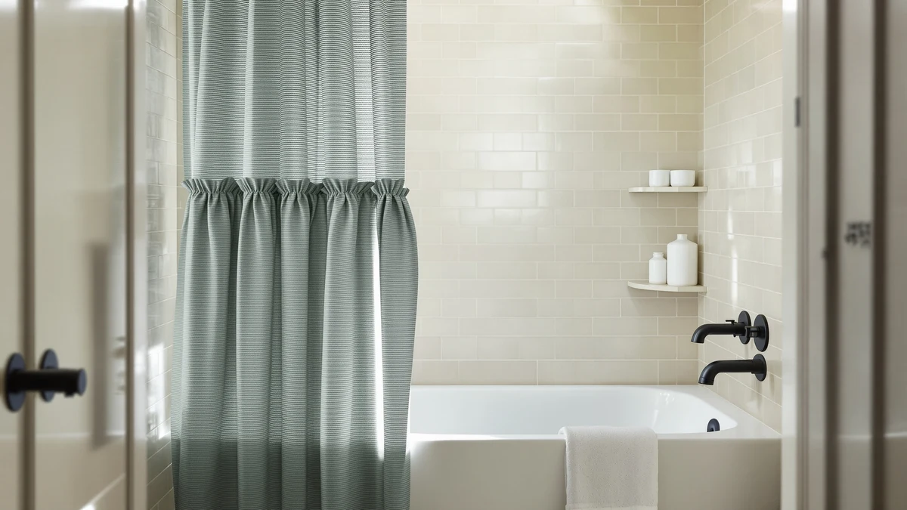

Madison Park Grace Ruffle Shower Curtain Review (2026): Worth It?
Prices and picks verified as of November 2026. Independent, reader-supported reviews.


Quick Answer
The Madison Park Grace Extra Long is our pick for most ruffle-style shower curtains at $35.87, pairing a 72 by 84 inch polyester and PEVA build with a tiered ruffle hem sized for taller stalls. If you want a different texture or a stronger review record, the eachope No Hooks Needed Linen at $32.99 is the better value.
Our pick: Madison Park Grace Extra Long, $35.87 Check Price on Amazon
Bottom line: our top pick is the Madison Park Grace Extra Long Ruffle Shower Curtain at $37.49.
Things to Know Before You Buy
- Size matters more than style. The Grace Extra Long measures 72 by 84 inches, about a foot taller than a standard 72 by 72 inch curtain, so measure your rod height before you buy.
- Ruffle tiers add bulk. A tiered ruffle design uses more fabric than a flat panel, which can mean a heavier, slower-drying curtain in a humid bathroom.
- Material blends vary by pick. The Grace and the ANRODUO option use a polyester build, while the BTTN and eachope picks lean on a linen-textured weave for a different look and feel.
- Only one pick here has a public rating. The eachope No Hooks Needed Linen shows a 4.7 star average across 623 verified ratings; the other three curtains in this review do not have a published rating we can cite.
This Madison Park Grace Ruffle shower curtain review breaks down the $35.87 Extra Long version against three ruffled and linen-style alternatives on price, materials and verified owner feedback. Ruffled shower curtains promise a soft, layered look, but the ruffle detail can also trap water and sag over time if the fabric and hem construction are not solid. We compared the spec sheet, current Amazon pricing and patterns across verified buyer reviews to see where the Grace holds up and where it falls short.
For most bathrooms, the Madison Park Grace Extra Long earns its spot as our pick in this review, pairing a ruffled tier design with a 72 by 84 inch polyester and PEVA blend built for standard to slightly taller stalls. Shoppers who want a different texture or a sharper price point still have three solid alternatives covered later in this review, each judged against the same price, material and review-count criteria.
Why You Should Trust Us
Ilane Tall researches bathroom and home products for Best Shower Curtains, comparing manufacturer spec sheets, live Amazon pricing and patterns in verified owner reviews instead of marketing copy. For this Madison Park Grace Ruffle review, Ilane pulled the listed dimensions, materials and prices for all four curtains directly from their product pages and checked them against buyer feedback where it was available. Best Shower Curtains does not run a fake testing lab, and we never credit a curtain with a rating or review count that is not published on its own listing.
Every pick in this comparison came from the same source hierarchy: the manufacturer's listed specifications first, the current Amazon price second, and verified owner review patterns third, only where a listing actually publishes them. We left out any figure we could not trace back to one of those three sources, which is why this review states plainly when a curtain, including the Grace itself, does not have a public rating to cite.
Our Research Experience
We did not install or hang the Madison Park Grace Ruffle on a shower rod for this review. Instead, we compared its listed materials, dimensions and price against the ANRODUO, BTTN and eachope curtains using the specifications published on each Amazon listing, the current price at the time of writing and the patterns that show up across verified owner reviews. Where a pick lists a star rating or review count on its listing, we cite it; where it does not, we say so instead of guessing.
Overview & Specs

Madison Park Grace Extra Long
What we like
- 72 inch by 84 inch length fits taller stalls and walk-in showers without pooling on the floor
- Polyester and PEVA blend resists water better than an all-cotton ruffle curtain
- Priced under $36, it undercuts most linen-look ruffle curtains in its size
Flaws but not dealbreakers
- No published star rating or review count on the listing, so we cannot cite an owner feedback pattern for this specific pick
- The tiered ruffle design holds more fabric than a flat panel, which likely means a longer dry time in a small, poorly ventilated bathroom
| Material | Polyester / PEVA |
| Size | 72"W x 84"L (Pack of 1) |
The Madison Park Grace Extra Long builds its look from a tiered ruffle pattern, the kind of layered texture usually reserved for bedding, applied here to a 72 inch by 84 inch shower curtain. The brand lists the material as a polyester and PEVA blend, a combination meant to pair the drape of fabric with some water resistance at the lower tiers. At $35.87, it sits in the middle of the four curtains in this review, costing more than the eachope linen pick and less than the BTTN scalloped linen curtain.
Because the listing does not publish a star rating or review count, we cannot point to a verified review pattern the way we can for the eachope pick, which carries a 4.7 star average across 623 ratings. That gap does not knock the Grace out of the top spot in this Madison Park Grace Ruffle shower curtain review. A 72 inch by 84 inch ruffled curtain is still uncommon at this price, since most ruffle-style options stop at 72 inches tall. Shoppers with a taller rod or a walk-in shower get the most value from that extra length.
What We Liked
The biggest advantage of the Madison Park Grace Ruffle shower curtain is its 72 inch by 84 inch length. Most ruffle-style curtains on Amazon top out at 72 inches tall, built for a standard tub surround, so a tiered ruffle design that reaches 84 inches without becoming a custom order stands out. Owners shopping for a walk-in shower or a rod mounted higher than 72 inches get a style option that is usually reserved for flat panel curtains.
The polyester and PEVA blend also suits the ruffle format better than an all-cotton version would. PEVA is a common liner-grade material, and working it into part of the construction gives the lower tiers more resistance to water than a purely decorative fabric offers. At $35.87, the price undercuts the BTTN Boho Scalloped Linen by about a dollar and stays inside the range we would expect for a curtain this size, even without a published rating to point to.
What Could Be Better
The clearest gap in this Madison Park Grace Ruffle shower curtain review is the missing star rating and review count on the Amazon listing. We can describe what the spec sheet promises, but we cannot point to a pattern of verified owner feedback the way we can for the eachope pick, which shows 623 ratings averaging 4.7 stars. Shoppers who weigh social proof heavily before buying should factor that gap into their decision.
A tiered ruffle design also holds more fabric against the tub or shower floor than a flat panel, and that extra material takes longer to dry in a bathroom without strong ventilation. Owners replacing an older flat curtain with the Grace should expect a heavier wash load and a slower dry cycle than they are used to.
Who Is It For?
The Madison Park Grace Ruffle shower curtain fits a household with a shower rod set higher than the standard 72 inches, or a walk-in stall that swallows a normal-length curtain. It also suits anyone who wants the layered, bedding-style look of a ruffle without switching to an all-cotton fabric that needs more careful washing.
It is a weaker fit for anyone who leans on star ratings before buying, since this specific listing does not publish one. A bathroom with poor ventilation is also a tougher match, given how much fabric a tiered ruffle design holds compared with a flat panel. Renters who move apartments often, and would rather travel with a flatter panel that packs down small, may also prefer one of the linen-style alternatives below instead of the bulkier ruffle tiers.
Alternatives to Consider
If the Grace does not match your bathroom, these three curtains cover the other directions shoppers usually go: a different color in the same ruffle family, a linen-textured scalloped edge, and a no-hook design built around a linen look instead of a ruffle.

Also Great
ANRODUO Sage Green Extra Long
A sage green take on the same extra-long format, priced a dime above the Grace, for bathrooms that want color instead of a ruffle texture.
$35.99
Check Price on Amazon
Premium Choice
BTTN 108x72 Boho Scalloped Linen
A wider 108 inch by 72 inch scalloped-edge curtain with a linen look, built for a bigger stall or a double-width rod and priced about a dollar above the Grace.
$36.99
Check Price on Amazon
Best Value
eachope No Hooks Needed Linen
The cheapest pick here at $32.99, with a no-hook linen design and 623 verified ratings averaging 4.7 stars, the strongest review record of the four curtains in this comparison.
$32.99
Check Price on AmazonFrequently Asked Questions
Final Verdict
This Madison Park Grace Ruffle shower curtain review comes down to size and texture more than price. The Grace Extra Long wins the top spot for its 72 inch by 84 inch ruffle design, a size most ruffled curtains in this category skip, at a price that still undercuts the premium linen pick. If you want a different color in the same format, the ANRODUO Sage Green is nearly identical in price and size. If a strong review record matters more to you than a ruffle, the eachope No Hooks Needed Linen is the safer bet at $32.99 with 623 verified ratings behind it. For most shoppers with a tall rod or a walk-in stall, Madison Park's Grace Extra Long remains the pick.